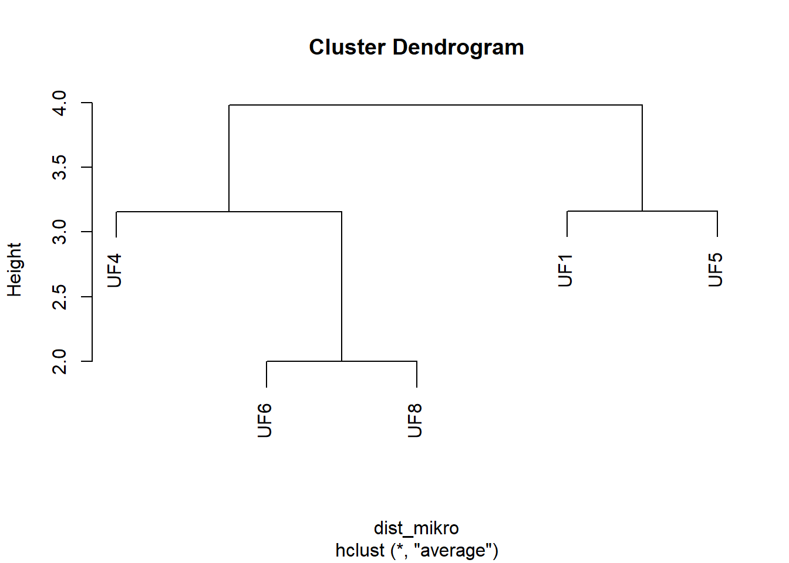

Modul Praktikum Sistematika Mikrobia
2022-04-02
Bab 1 TAKSONOMI NUMERIK FENETIK
1.1 Klasifikasi Numerik-Fenetik Berdasarkan Data Fenotipik
1.1.1 Pengantar
Taksonomi numerik yang juga dikenal dengan sebutan taksonomi Adansonian (berdasarkan nama ahli sistematika Michael Adanson) didefinisikan sebagai pengelompokan unit taksonomis ke dalam sejumlah taksa dengan metode numerik berdasarkan karakteristik yang dimiliki. Taksonomi numerik didasarkan atas lima prinsip utama, yakni:
- Taksonomi yang ideal adalah taksonomi yang mengandung informasi terbesar yaitu yang didasarkan atas sebanyak-banyaknya karakter.
- Masing-masing karakter diberi nilai yang setara (a priori) dalam mengkonstruksi takson yang bersifat alami.
- Tingkat kedekatan antara dua strain/OTU (operational taxonomical unit) merupakan fungsi similaritas yang dimiliki bersama.
- Taksa yang berbeda dibentuk atas sifat yang dimiliki.
- Similaritas tidak bersifat filogenetis melainkan bersifat fenetis.
Tujuan utama taksonomi numerik adalah untuk menghasilkan suatu klasifikasi yang bersifat teliti, reprodusibel, serta padat informasi. Aplikasi taksonomi numerik dalam konstruksi klasifikasi biologis memungkinkan terwujudnya sirkumskripsi takson berdasarkan prinsip yang mantap dan bukan sekedar klasifikasi yang bersifat subjektif belaka. Teknik klasifikasi meliputi empat tahapan, yaitu:
- Strain mikrobia (n) yang akan diklasifikasikan dikoleksi lalu ditentukan karakter fenotipiknya dalam jumlah besar (t) yang mencakup sifat yang tertera pada Tabel 1.1. Data yang diperoleh disusun dalam suatu matriks n x t.
- Strain mikrobia diklasifikasikan berdasarkan nilai similaritas atau disimilaritas yang dihitung dari data n x t.
- Strain yang mirip akan dimasukkan ke dalam satu kelompok dengan menggunakan algoritma pengklasteran (clustering algorithm).
- Kelompok yang dibentuk secara numerik lalu dipelajari dan karakter yang bersifat membedakan (separating character) dipilih diantara data dalam matriks untuk selanjutnya digunakan dalam dentifikasi.
1.1.2 Cara Kerja
Tahapan kerja dalam klasifikasi numerik-fenetik terdiri dari (1) pemilihan strain uji, (2) pemilihan jenis pengujian, (3) pencatatan hasil pengujian, (4) data coding, (5) analisis komputer, dan (6) interpretasi hasil (Priest & Austin, 1993). Namun demikian, dalam praktikum ini kita akan menggunakan data hasil pengujian dari artikel penelitian yang terdapat pada jurnal ilmiah dalam bentuk tabel n x t. Namun, format yang digunakan adalah tidy data, yaitu setiap kolom merepresentasikan karakter (t) sementara setiap baris merepresentasikan sampel mikroorganisme(n). Dengan demikian, kita telah melewati tahapan kerja 1–3 dan langsung menuju tahapan data coding dan seterusnya.
Tabel 1.1. Kelompok karakter yang digunakan dalam taksonomi numerik bakteri (Priest & Austin, 1993).
No | Kelompok Karakter | Jenis Karakter |
1 | Morfologi kolonial | Bentuk dan ukuran koloni, pigmentasi larut/tidak larut/ |
fluoresens. | ||
2 | Morfologi selular | Sifat pengecatan, bentuk & ukuran sel, motilitas, |
ada/tidak nya flagela, ada/tidaknya spora. | ||
3 | Sifat pertumbuhan | Bentuk-bentuk pertumbuhan pada medium cair, kekeruhan, aerobsis/anaerobsis, kebutuhan vitamin, |
kemampuan tumbuh pada medium salinitas tinggi. | ||
4 | Sifat biokimia | Kemampuan fermentasi/oksidasi karbohidrat, kehadiran enzim katalase & oksidase, penghasilan asam, indol, & gas H2S |
5 | Resistensi terhadap antibiotik | Kemampuan untuk tumbuh pada medium yang mengandung antibiotik |
6 | Kemampuan penggunaan senyawa kimia sebagai satu- satunya sumber C | Kemampuan tumbuh pada medium minimal dengan glukosa/alanin/sitrat sebagai satu-satunya sumber karbon |
7 | Sifat serologis | Ada/tidaknya reaksi aglutinasi terhadap antiserum spesifik |
8 | Sifat kemotaksonomis | Kehadiran komponen sub-selular tertentu, seperti peptidoglikan, menakuinon, asam mikolat. |
9 | Sifat genetik | Kandungan G+C pada DNA |
10 | Phage typing | Ada/tidaknya pola phage typing tertentu |
1.1.2.1 Penelusuran Sumber Data
Dalam praktikum ini, data untuk klasifikasi numerik-fenetik didapatkan melalui hasil penelusuran artikel ilmiah. Artikel ilmiah tersebut dapat dicari dari internet melalui Google Search dengan mengetikan kata-kata kunci terkait klasifikasi numerik fenetik seperti contohnya “numerical taxonomy of…” atau “numerical classification of…” Salah satu contoh artikel dapat dilihat pada West et al. (1986) yang mempelajari klasifikasi spesies anggota genus Vibrio yang diisolasi dari perairan. Data yang terdapat pada artikel tersebut selanjutnya akan dijadikan contoh pada panduan praktikum ini. Setelah mendapatkan artikel jurnal, telusuri tabel n x t yang terdapat di dalam artikel tersebut. Walaupun sering tidak disebut sebagai tabel n x t, namun tabel n x t dapat terlihat dari cirinya yang mengandung informasi mengenai strain-strain mikrobia (n) serta jenis karakter yang diujikan (t). Karakter yang terkandung dalam tabel n x t pada umumnya akan dikelompokan seperti pada Tabel 1.1
1.1.2.2 Konstruksi Tabel
Berdasarkan tabel n x t yang diperoleh dari artikel jurnal penelitian, selanjutnya kita membuat tabel n x t sendiri. Tabel n x t dapat dibuat dengan program Microsoft Excel (MS Excel). Pada MS Excel, strain (n) dimasukan sebagai baris dan karakter pengujian (t) dimasukan sebagai kolom (Gambar 1.1.). Pengkodean pada tabel n x t menggunakan sistem biner, yakni notasi “1” dan “0”. Notasi “1” diberikan apabila ada kehadiran suatu sifat dan notasi “0” diberikan untuk ketidakhadiran suatu sifat. Jika dilihat pada Gambar 1 tersebut, kemampuan V. fluvialis untuk dapat tumbuh pada medium dengan kandungan NaCl 6% menjadikan spesies tersebut mendapatkan notasi “1” pada karakter “Pertumbuhan 6% NaCl”. Sebaliknya, V. fluvialis tidak dapat tumbuh pada medium dengan kandungan NaCl 0% sehingga membuatnya mendapatkan notasi “0” untuk sifat tersebut. Dalam laporan tertulis atau publikasi ilmiah, penggunaan notasi “1” dan “0” pada n x t sebagai indikasi kehadiran dan ketidakhadiran suatu sifat pada suatu strain terkesan kurang lazim. Pada umumnya, notasi “+” dan “–“ digunakan sebagai pengganti “1” dan “0”. Namun demikian, notasi “1” dan “0” pada n x t dimaksudkan untuk kepentingan analisis menggunakan program komputer, karena program tersebut tidak dapat mengenali notasi “+” dan “–“.
## New names:
## * `` -> ...1...1 | UF1 | UF4 | UF5 | UF6 | UF8 |
Circular | 1 | 0 | 1 | 0 | 0 |
Rhizoid | 0 | 1 | 0 | 0 | 0 |
Irregular | 0 | 0 | 0 | 1 | 1 |
Flat | 0 | 1 | 0 | 0 | 0 |
Convex | 0 | 0 | 1 | 0 | 0 |
Raised | 1 | 0 | 0 | 1 | 1 |
Entire | 1 | 0 | 1 | 0 | 0 |
Undulate | 0 | 0 | 0 | 0 | 0 |
Filamentous | 0 | 1 | 0 | 0 | 0 |
Erose | 0 | 0 | 0 | 1 | 1 |
Opaque | 1 | 0 | 1 | 0 | 0 |
Translucent | 0 | 1 | 0 | 1 | 1 |
Shiny | 1 | 0 | 1 | 0 | 0 |
Dull | 0 | 1 | 0 | 1 | 1 |
Yellow | 0 | 0 | 0 | 0 | 0 |
Cream | 0 | 0 | 1 | 0 | 0 |
White | 1 | 1 | 0 | 1 | 1 |
Smooth | 1 | 0 | 1 | 0 | 0 |
Rough | 0 | 1 | 0 | 1 | 1 |
Sel batang | 1 | 1 | 1 | 1 | 1 |
Gram | 1 | 1 | 1 | 1 | 1 |
Endospora | 1 | 1 | 1 | 1 | 1 |
Aerob obligat | 1 | 0 | 1 | 1 | 1 |
Fakultatif anaerob | 0 | 1 | 0 | 0 | 0 |
Uji Motilitas | 1 | 1 | 1 | 1 | 1 |
Uji Katalase | 1 | 1 | 1 | 1 | 1 |
Uji Hidrolisis Amilum | 0 | 1 | 1 | 1 | 0 |
Uji Hidrolisis Gelatin | 0 | 0 | 0 | 0 | 0 |
Uji Hidrolisis Kasein | 0 | 0 | 1 | 1 | 0 |
Uji Sitrat | 0 | 0 | 1 | 0 | 0 |
Uji Toleransi Salinitas NaCl 3% | 1 | 1 | 1 | 1 | 1 |
Uji Toleransi Salinitas NaCl 6,5% | 0 | 0 | 1 | 1 | 0 |
Uji Toleransi Salinitas NaCl 10% | 0 | 0 | 1 | 0 | 0 |
Uji VP | 0 | 1 | 1 | 0 | 1 |
Uji MR-VP | 1 | 1 | 1 | 1 | 1 |
Uji Fermentasi Glukosa menghasilkan asam | 1 | 1 | 1 | 1 | 1 |
Uji Fermentasi Glukosa menghasilkan gas | 0 | 0 | 0 | 0 | 0 |
Uji Fermentasi Arabinosa menghasilkan asam | 0 | 0 | 0 | 0 | 0 |
Uji Fermentasi Arabinosa menghasilkan gas | 0 | 0 | 0 | 0 | 0 |
Diameter sel ≥ 1µ | 1 | 1 | 1 | 1 | 1 |
Uji Resisten Fe 30 ppm | 1 | 1 | 1 | 1 | 1 |
Uji Resisten Fe 90 ppm | 1 | 1 | 1 | 1 | 1 |
Uji Resisten Fe 120 ppm | 1 | 1 | 1 | 1 | 1 |
Uji Resisten Fe 350 ppm | 0 | 0 | 0 | 0 | 0 |
Resisten suhu 80◦ | 1 | 1 | 1 | 1 | 1 |
Perlu diketahui bahwa pemilihan spesies dalam konstruksi tabel n x t sebaiknya mencakup type strain untuk spesies tersebut. Dengan kata lain, sangat disarankan apabila data yang digunakan juga memiliki hasil pengujian untuk type strain. Suatu type strain merupakan strain yang mewakili suatu spesies atau dengan kata lain type strain merupakan pemilik nama spesies. Kehadiran suatu type strain dalam proses konstruksi dendrogram berfungsi sebagai acuan bagi strain-strain lainnya yang memiliki kesamaan nama spesies dengan type strain, sehingga dapat lebih meyakinkan posisi strain-strain tersebut dalam suatu dendrogram
1.1.2.3 Konstruksi Dendogram Menggunakan Bahasa Pemrograman R
library(tidyverse)## -- Attaching packages --------------------------------------- tidyverse 1.3.1 --## v ggplot2 3.3.5 v purrr 0.3.4
## v tibble 3.1.6 v dplyr 1.0.8
## v tidyr 1.2.0 v stringr 1.4.0
## v readr 2.1.2 v forcats 0.5.1## -- Conflicts ------------------------------------------ tidyverse_conflicts() --
## x purrr::compose() masks flextable::compose()
## x dplyr::filter() masks stats::filter()
## x dplyr::lag() masks stats::lag()library(factoextra)## Welcome! Want to learn more? See two factoextra-related books at https://goo.gl/ve3WBa# Input data secara manual menggunakan fungso data.frame
mie_instan <- data.frame(nama = c("Indomie rendang", "Indomie soto", "Indomie kari", "Sedap goreng", "Sedap soto", "sedap kari"),
kuah = c(0, 1, 1, 0, 1, 1),
garam = c(1.5, 1.4, 1.5, 1.8, 2, 2.1),
fiber = c(10, 12, 12, 15, 15, 15),
kalori = c(1015, 1016, 1017, 1700, 1750, 1690))
# Input data dari sistem peyimpanan lokal
contoh_data <- readxl::read_excel("C:/Users/Lenovo/Documents/praktikumsismikbits/data/contohdatatidy.xlsx")
View(contoh_data)## Warning in do.call(data.frame, c(x, alis)): unable to translate 'Resisten suhu
## 80<U+25E6>' to native encodingdatamikro <- contoh_data |> column_to_rownames(var = "0")
dist_mikro <- dist(datamikro, method = 'euclidean')
clust_mikro <- hclust(dist_mikro, method = "average")
plot(clust_mikro)